MÁQUINAS AGRÍCOLAS JACTO SA
Rua Dr , Луис Миранда, 1650 год
17580-000 - Помпейя - SP - Бразилиа
Телефон 662 604 954
646-202-9690 Факс 646-435-9434
E-mail: export@jacto.com.br
Домашняя страница: www .jacto.com.br
• руководство по эксплуатации;
Русская версия - MI_USA-0269
Издание 1.0
Код.
АО-5000 А
Электронное
Spra УПРАВЛЕНИЕ YERS
3.
АО-5000 А
СОДЕРЖАНИЕ
Введение39.
Operation (Операция)
панель39.
- 1- ВКЛ / ВЫКЛ ПЕР SWЛЮЧАТЕЛЬ .................................................. .................................................. .......39.
- 2- "АВТОМАТИЧЕСКИЙ TIC / MANUAL "(Переключатель) .................................................. .................................. 39.
- 3- "ФУНКЦИОНАЛЬНЫЙ" ПЕРЕКЛЮЧАТЕЛЬ " .................................................. .................................................. , 39.
- 4- DISPLA Y В ДОСТУПНЫЕ ФУНКЦИИ .................................................. ................................39.
Жидкокристаллический дисплей39.
- 6 - "+ / -" ПЕР SWЛЮЧАТЕЛЬ .................................................. .................................................. ...............39.
- 7- Переключатель «СБРОС» .................................................. .................................................. .........39.
- СИГНАЛИЗАЦИЯ И ОШИБКИ VISUALIZA ПРИ ИСПОЛЬЗОВАНИИ ..................................................39.
12 Калибровка 23639.
Программирование
- ДОСТУП К ПРОГРАММЕ КОНТРОЛЯ .................................................. ........................ 39.
- РЕГУЛИРОВКА РАСХОДОМЕРА .................................................. ........................................ 39.
- РЕГУЛИРОВКА СКОРОСТИ .................................................. ...................................... 39.
- РЕГУЛИРОВКА ДЛИНЫ СЕЧЕНИЯ СТРЕЛКИ .................................................. .................. 39.
- ИСПЫТАТЕЛЬНАЯ УСТАНОВКА .................................................. .................................................. ......................№
Техническое обслуживание 39.
- ЧИСТКА РАСХОДОМЕРА .................................................. ..........................................39.
- РЕГУЛИРОВКА РУЧНОГО ДАВЛЕНИЯ .................................................. ................................ 39.
- КОНТРОЛЬ РУКОВОДСТВО ПО ЭКСПЛУАТАЦИИ OPERA ОБЛАСТЬ .....................39.
- ИСПЫТАНИЕ СЕЧЕНИЙ СТРЕЛЫ ДАТЧИКИ И ЗВУКОВАЯ СИГНАЛИЗАЦИЯ ............................ 39.
- ДИАГНОСТИРОВАНИЕ ЭЛЕКТРОННЫХ ПРОБЛЕМ .................................................. .......................39.
- ДИАГНОСТИРОВАНИЕ СИГНАЛОВ ПРИ ПРОГРАММИРОВАНИИ / РЕГУЛИРОВАНИИ ............................... 39.
- ДИАГНОСТИРОВАНИЕ ДЕФЕКТОВ НА СПРАВАХ YERS, ОБОРУДОВАННЫЕ ЗАО-5000 ........... 39.
- INST АЛЛИНГОВАЯ КОМПАНИЯ АО-5000 А .................................................. ............................................39.
- INST СОЗДАВАЯ JEC-3200 / JEC-3400 /
ELECTRIC P ANEL III .................................................. ........ 30.
- ПОЗИЦИОНИРОВАНИЕ JEC-3200 / JEC-3400 /
ELECTRIC P ANEL III AND АО-5000 А ........... №
ST Tement OF LIMITED W ARRANTY .................................................. ...................................... 39.

4.
АО-5000 А
АО-5000 ЭЛЕКТРОННАЯ СПРАВОЧНАЯ УПРАВЛЕНИЕ
OPERA TION, CALIBRA TION И ТЕХ MAЕСКОЕ ОБСЛУЖИВАНИЕ
ПОЗДРАВЛЯЕМ!
Y Вы только что приобрели высокотехнологичное оборудование, которое облегчит ваше фитосанитарное
Лечения и повышения производительности ,
С АО-5000 A , оператор больше не будет тратить время на настройку и проверку
опрыскиватель ,
АО-5000 ЭЛЕКТРОННАЯ СПРАСКА УПРАВЛЕНИЕ
Это система, которая автоматически калибрует опрыскиватель и обеспечивает постоянное количество жидкости
Независимо от колебаний скорости на одной и той же передаче , Рекомендуемая
Скорость работы с АО-5000 Составляет от 2,17 до 18,64 миль / ч.
С введением АО-5000 A, фермер будет экономить время и химикаты. 10% -ные ошибки
Практически неизбежны в ручных калибрациях, которые являются пробными и ошибочными , Помимо ошибки
В калибровочных работах колебания скорости трактора также влияют на результат. АО-5000 компенсирует
Все колебания на рабочей скорости и поддерживают постоянный объем жидкости в каждой области. Использование АО-
5000 Обеспечивает колебание до 5% только при расчете площади, что означает, что жидкость
Не применяется, поскольку расчеты различаются, поскольку это колебание
Полученные компьютером из-за неблагоприятных условий, таких как давление в шинах, песчаная почва, распылители
Преодоление приподнятых площадок, проскальзывание шин и т. Д.
С АО-5000 A, оператор должен указать, сколько литров распыляемой смеси он намеревается
Применяется на гектар, а контроль будет регулировать давление в зависимости от рабочей скорости, чтобы
Обеспечить ввод литра оператором , Важно отметить, что для этого регулирования, чтобы быть точным,
Весь контур распыления должен быть очень чистым.
Помимо автоматической калибровки опрыскивателя , АО-5000 Обеспечивает фермерам важное
Данные для обработки распыления. При использовании сенсорных клавиш на экране отображается следующее
Информация: Среднее распыление, время работы, пройденное расстояние с распылителем, литры на
Мин, площадь частичной обработки, общая обрабатываемая площадь, частичный распыленный объем и общий распыленный объем.
Вся эта информация очень полезна для решения задачи фитосанитарного лечения и принятия решений.
Во время операции на экране постоянно отображается рабочая скорость и объем распыления.
Другая функция АО-5000 Это ручная калибровка. Должна ли быть какая-либо проблема в
Компьютерная система, оператору не придется прерывать приложение. Просто выберите руководство
И продолжать распылять до тех пор, пока компьютерная система не будет отремонтирована. Это позволяет
Фермер, чтобы использовать все прецизионные преимущества компьютерной системы, не теряя при этом преимуществ
Простота ручной настройки ,
Введение
5
АО-5000 А
ADV МУРАВЕЙ ВОЗРАСТ ЗАО-5000 А
39. Упрощает калибровку распылителя, исключая операции для расчета рабочей скорости
И для калибровки.
ПРИМЕЧАНИЕ. Каждый раз, когда вы заменяете форсунки или каждую неделю, проверяйте, действительно ли поток форсунок
Скорость на стреле соответствует входу расхода на дисплее управления (Функция:
Prog.th.CAL? . Эта процедура описана в разделе: ПРОГРАММИРОВАНИЕ - Алабама УЧИТЫВАЯ
FLOWMETER CONST МУРАВЕЙ ,
2. Значительно улучшает точность калибровки.
3. Автоматически компенсирует колебания рабочей скорости.
4. Автоматически компенсирует колебания расхода сопел, вызванные износом или колебаниями
От давления.
39. Предоставляет ряд соответствующих оперативных данных.
39. Устраняет зависимость от манометра в качестве эталона для давления и расхода.
Введение
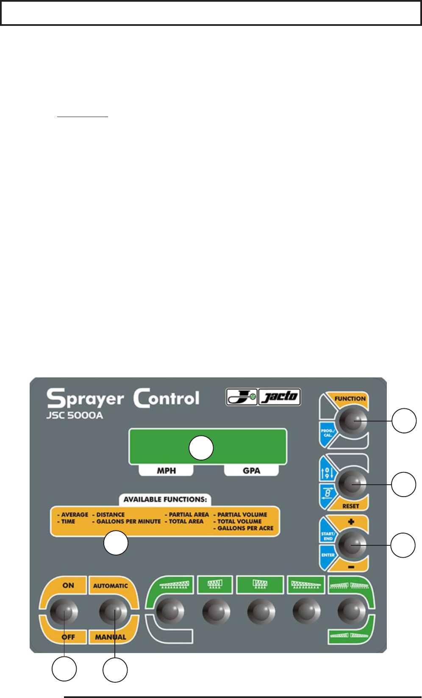
6.
АО-5000 А
Operation (Операция)
Для управления заявкой АО-5000 Рассчитывает скорость распылителя (миль / ч) и
Расход (галлон / мин), распыляемый.
Обратите внимание на следующую формулу:
Gpm x 495
Миль / ч xs
Где: врач общей практики м знак равно T о тал Расход форсунки на стреле
Постоянные
м п час знак равно S Скорость молитвы
s знак равно S Ширина полосы молитвы в футах
Компьютер вычисляет применяемый том (gpa). Если том не равен этому
Желаемый компьютер изменяет настройку регулятора давления, чтобы отрегулировать расход (gpm) до получения
Желаемый объем.
Для АО-5000 Для изменения настройки регулятора давления CRC-200-E имеет
Электродвигатель, соединенный с блоком регулятора давления , Если компьютер не может исправить
Объем распыления, или если некоторые датчики показывают проблемы, звуковой сигнал будет показывать ошибку.
Совокупный академический балл: 2.15
панель
1
2
5
4.
3.
7.
6.
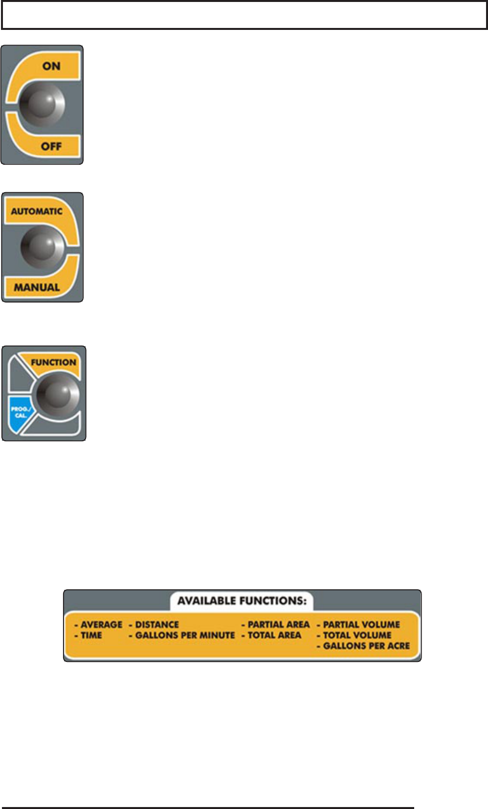
7.
АО-5000 А
РУКОВОДСТВО: На Это положение, опрыскиватель приводится в действие механически, а
Контроль будет контролировать только приложение.
AUTOMA TIC: На этой позиции управление осуществляется в электронном виде , Контроля
Расход и поддерживающая постоянная объем распыления (gpa).
2- «AUTOMA TIC / MANUAL ПЕРЕКЛЮЧАТЕЛЬ»
3- Переключатель «FUNCTION»
Этот переключатель отображает доступные функции управления. Двигая его вверх и вниз
Функции появляются в верхней строке экрана один за другим после
В том же порядке, что и на панели.
Следует учитывать, что при включении АО-5000 A, первая отображаемая функция:
"ВРЕМЯ". Также обратите внимание, что если выбрана функция «ADJ. Gpa» и 30 секунд
Без изменения этой функции, на дисплее появится функция TIME.
Это сделано для предотвращения случайных изменений, когда функция «ADJ .gpa» не используется
надзором.
ЗАМЕТКА: О N В правой верхней части панели, кроме переключателя FUNCTION, есть синий квадрат с
Указание «Prog./ Cal. », Что означает« Программа и Настройка. T O получить доступ к этой информации,
Существует специальная процедура, описанная в разделе ПРОГРАММИРОВАНИЕ.
Доступ к этим функциям осуществляется путем перемещения рычага переключателя функций (№ 3).
- MEAN: при использовании опрыскиватель рассчитывает средний объем распыления (gpa) и скорость (mph).
ПРИМЕЧАНИЕ. При каждом перезапуске задания распыления эти значения стираются для новых данных. Это минимум.
Время для элемента управления для вычисления среднего значения составляет 30 секунд.
- ВРЕМЯ: фактическое время распыления (часы)
- DIST ANCE: dist (Миль) с включенными форсунками.
4- ДИСПЛЕЙ Ю.А. В AILABLE ФУНКЦИИ
Operation (Операция)
1- Переключатель ВКЛ / ВЫКЛ
TTENTION: Этот переключатель должен оставаться включенным во время операции, в противном случае
Управление не будет хранить накопленные данные об области, объеме и т. Д.
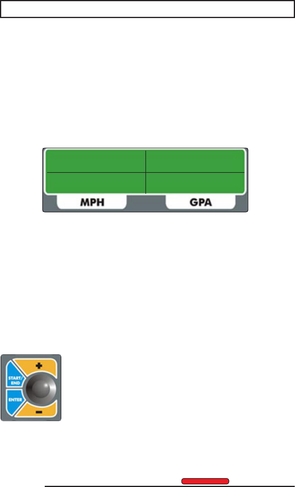
8.
АО-5000 А
Operation (Операция)
T O упростить объяснение значений, отображаемых на дисплее , Мы разделили его на 4 части: A, B,
C и D.
- Он показывает функцию, к которой был осуществлен доступ.
В - Он показывает значение, соответствующее используемой функции.
Пример: если «А» отображает функцию «Галлоны за акр», тогда «В» покажет объем, откалиброванный в
3,86 / 4,0 Средний Балл
C- Он показывает рабочую скорость (миль / ч). И если AUTOMA TIC / MANUAL Переключатель установлен в положение MA-
NUAL Операции, буквы «MA» также будут отображаться с перебоями ,
D- Он показывает мгновенное значение в графе gpa, которое является фактическим значением распыления.
Жидкокристаллический дисплей
Этот переключатель имеет желтый и синий цвета, каждый из которых соответствует
Различные функции.
Функции, соответствующие синему цвету, описаны в разделе
Программирование
Здесь мы объясним сигналы «+» и «-», расположенные в желтой части.
T O используйте этот переключатель, необходимо установить FUNCTION в положение ADJ gp а.
Когда он находится в функции «gpa», переместите переключатель «+ -» вверх или вниз и обратите внимание, что
Величина, соответствующая изменениям gpa. Продолжайте перемещать переключатель, пока он не покажет желаемый уровень громкости.
Ввод значения будет соответствовать скорости применения (gpa) , которую управление будет регулировать после
Завершая другие этапы калибровки.
ПРИМЕЧАНИЕ. Значения этого переключателя варьируются от 15 до 2000 (L / га).
6- "+ / -" SWITCH
- ГАЛЛОНЫ ПО МИНУТУ: общее количество распыляется всеми форсунками в течение одной минуты (гал / мин).
- п ARTIAL AREA: указывает площадь, покрываемую распылителем (акр). Эта функция может использоваться для
Записывать обрабатываемую площадь в день , На полосу земли и т. Д.
- TOT Алабама AREA: указывает общую площадь, накопленную в гектарах (акр). Эту функцию можно использовать
Для записи рабочей зоны в течение длительного времени.
- п ARTIAL VOLUME: указывает количество применяемой химической смеси (галлонов). Эта функция
Может использоваться для указания количества химической смеси, применяемой в день , На полосу земли и т. Д.
- TOT Алабама ОБЪЕМ: Эта функция указывает количество химической смеси, применяемой в течение длительного времени.
- ГАЛЛОНЫ PER ACRE: в этой функции вы можете запрограммировать желаемую скорость применения в gpa.
А
Б
CD -диск

9.
АО-5000 А
Operation (Операция)
Этот переключатель также имеет синий и желтый цвета, каждый из которых соответствует
К различным функциям.
Функции, соответствующие синему цвету, описаны в
Раздел ПРОГРАММИРОВАНИЕ ,
Кроме значений в «gpa» и «gpm», этот переключатель сбрасывает все остальные
Значения, заданные переключателем FUNCTION.
ПРИМЕЧАНИЕ: T O сброс, необходимо удерживать переключатель 5 секунд.
7- Переключатель «RESET»
Пример:
После периода опрыскивания можно узнать расстояние пробега, количество распыляемого
Га, количество распыляемой химической смеси и т. Д.
Если вы установите переключатель FUNCTION в положение «T Otal V Olume "или" Partial V Олуме ", вы заметите, что
Значения те же.
Если вам нужно изменить площадь и вы хотите знать, какой будет объем распыления, установите
Переключатель FUNCTION в положение «Partial V olume». Затем переместите этот переключатель, чтобы сбросить это значение.
После распыления новой области, вы заметите, что «T Ветхий Завет Al V Олом »будет по-прежнему
И "Частичное V Olume "будет иметь значение, распыленное в области, которую вы имеете
контро
10 .
АО-5000 А
ВОЗМОЖНЫЕ ОШИБКИ СИГНАЛИЗАЦИЯ И ВИЗУАЛИЗА ПРИ ИСПОЛЬЗОВАНИИ
ПРИМЕЧАНИЕ. Оба аварийных сигнала и ошибки возможны только в том случае, если для управления установлено значение AUTOMA Операция TIC.
В случае возникновения тревоги, для АО-5000 Продолжать работать нормально , Необходимо установить
Переключатель №. 2 (стр. 06) в РУЧНУЮ операцию. После решения проблемы установите переключатель в положение
AUTOMA Снова включите ТИЦ. Если он остается установленным в РУЧНОМ Будет звучать звук
В течение 20 секунд.
1- BA олучатель Y ОШИБКА HIGH VOL T ,
Возможное причина - Проблема с электрической цепью распылителя
(Регулятор напряжения генератора).
2- BA ОШИБКА TTERY LOW VOL T ,
Возможное причина - Проблема с электрической цепью распылителя
(Регулятор напряжения генератора).
3- КОНТРОЛЬ ERROR LOW P , ПРЕДЕЛ
Возможная причина - Объем распыления, не совместимый с
Скорость и тип сопла.
4- КОНТРОЛЬ ERROR HIGH P , ПРЕДЕЛ
Возможные причины - Объем распыления, не совместимый с
Скорость и тип сопла.
- Фильтры распылительной цепи с ограничением.
5- F ВСН T FLOWMETER ИЛИ СУХОЙ НАСОС
Возможные причины - Проблемы с расходомером ,
- Распылитель работает в течение длительного времени без воды в
цистерны.
6- ОШИБКА ПАМЯТИ
Возможное причина - Электронная проблема на АО-5000 компьютер ,
7- ОШИБКА РАЗРЕШЕНИЯ СЕЧЕНИЯ СТРЕЛЫ
Возможная причина - Ошибка калибровки в области распыления
(Возврат управления Masterflow).
- Некоторые форсунки отключены или забиты.
8- ОШИБКА УПРАВЛЕНИЯ
Возможное причина - АО-5000 Не обеспечивает точность ,
9- LOW W УРОВЕНЬ ТЕЛ
Возможная причина - я N В первой строке дисплея появится сообщение «LOW W TER
LEVEL "появляется попеременно с используемой функцией. После
Одна минута, управление будет издавать звуковые сигналы.
Operation (Операция)
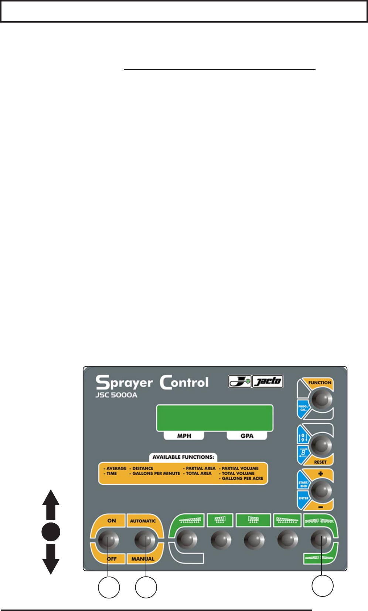
11.
АО-5000 А
12 Калибровка 236
Для калибровки опрыскивателя с электронным управлением он должен работать, помимо
Переключатель «Автоматический / Ручной» (№ 2 - стр. 06) должен быть установлен на «Ручной» (ручное управление).
T O используйте управление распылителем , вы должны откалибровать возврат каждой секции распыления и ввести
Желаемое значение "gpa" в FUNCTION gp а. И это значение должно быть совместимо со следующим:
1- Требуемая норма расхода (gpa) должна быть в пределах рекомендуемого рабочего давления
Диапазона для используемого сопла.
Например: для нанесения 10,68gpa на 6,21 миль / ч с помощью сопла API-1 10.02, это сопло должно
Обеспечивают расход в диапазоне давлений от 14,2 до 56,89 фунтов на квадратный дюйм.
2- Скорость (миль / ч) должна быть в рекомендованном диапазоне использования для типа сопла,
надзором.
ПРИМЕЧАНИЕ. Иногда объем не соответствует скорости и давлению сопла.
В этом случае оператор должен ознакомиться с соответствующими инструкциями.
CALIBRA РАЗДЕЛЕНИЕ СТУПЕНИ
- Поместите чистую воду в распылитель.
- Переключатель «Вкл. / Выкл.» (№ 1 - стр. 06) должен быть установлен на «Вкл.». Переключатель «Автоматический / ручной»
(№ 2) должен быть установлен в «Ручной».
- Запустите распылитель ,
- Ускорьте двигатель до получения 1800 об / мин (UNIPORT).
- Для тракторных опрыскивателей вращение на ВОМ должно составлять 540 об / мин.
- Установите все переключатели секции стрелы и переключатель «Реле» (№ 3 - рисунок ниже) на «Вкл.» (Чтобы включить
На спрей).
ИМПОРТИРОВАТЬ МУРАВЕЙ : НЕ Алабама TER ROT ДО КОНЦА ВЫ ЗАКОНЧИТЕ КАЛИБРУ TION.
ВЫКЛЮЧАТЕЛЬ
ВКЛ
ВЫКЛ
1
2
3.
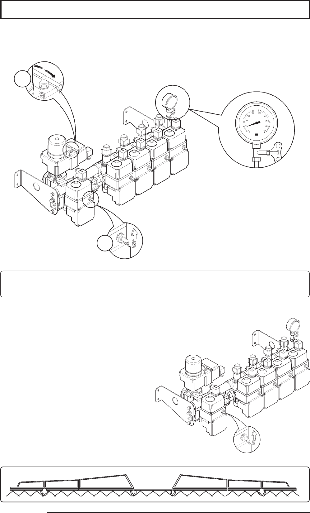
Операционная среда
АО-5000 А
12 Калибровка 236
1- Переведите переключатель (1), чтобы включить распылитель в стрелы (переключатель сброса P).
- Переместите ручной регулировочный переключатель давления (2), чтобы установить опорное давление (например: 3,5 кгс /
См2 - 50 фунтов на квадратный дюйм).
TTENTION: Установите ручку регулятора давления на опорное давление для калибровки
Секции стрелы (например, 50 фунтов / кв. Дюйм).
КАЛИБРОВКА ДАВЛЕНИЯ РАЗДЕЛИТЕЛЬНОЙ СТРЕЛЫ
2 - Удерживайте начальное вращение (540 об / мин для распылительного насоса)
И распыление на все секции стрелы.
2.
1
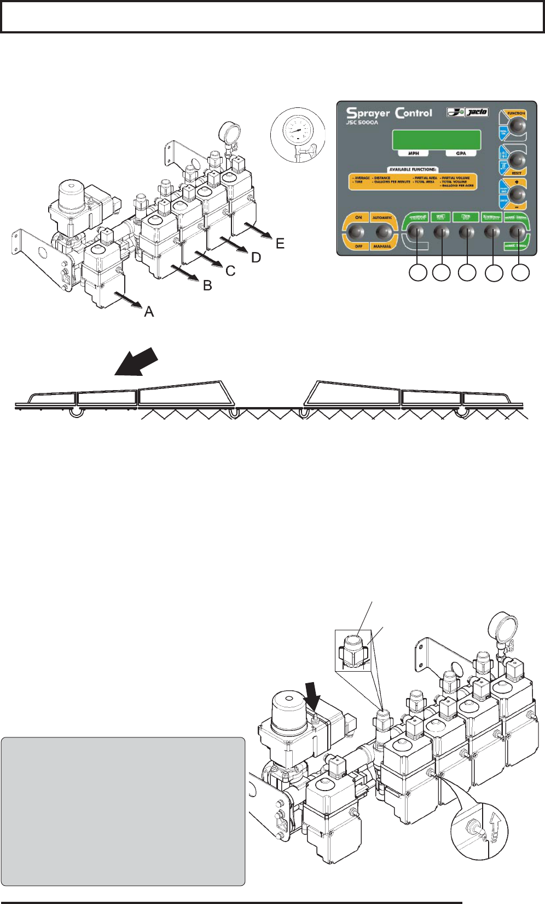
13.
АО-5000 А
Стопорный винт
Переключатель
Давление
Регулировочный переключатель
Вууум
РАЗДЕЛ 5:
Б
3 - Проверьте давление в манометре (50 psi).
4- Выберите один из секций стрелы (например: секция стрелы B) и переместите переключатель, чтобы выключить спрей.
5- Проверьте колебания давления в манометре (50 psi). Если оно колебалось, действуйте как
следующих случаях:
- Ослабьте стопорный винт.
- Включите переключатель секции стрелы B, как показано ниже. Удерживая его, поверните ручку
По часовой стрелке до упора. Затем поверните его против часовой стрелки до достижения баланса давления.
ПРИМЕЧАНИЕ:
Переключатели для приведения в действие электродвигателей
Блоки управления должны работать только
В случае необходимости калибровки контроля.
Во время использования включение и выключение
Спрей будет контролироваться через спрей
Панель управления. Только давление
Корректировка не может быть выполнена через
Управление приводом распылителя.
12 Калибровка 236
ПРИМЕЧАНИЕ. Спрей для другой стрелы
Разделы должны оставаться включенными.
Нет брызг к
Секция стрелы B
Е D С
Б
А
14.
АО-5000 А
ПРИМЕЧАНИЕ. Давление должно быть таким же, как указано ранее в манометре (50 фунтов / кв. Дюйм)
Когда все сопла этой секции стрелы включены.
- После калибровки манометра отпустите выключатель привода двигателя и затяните
Стопорный винт
- Повторите эту операцию на всех секциях стрелы, чтобы поддерживать постоянное давление вдоль
Стрела, независимо от количества включенных секций стрелы.
TТЕНЬ: Не меняйте PT O при проверке, чтобы не менять сопло
Давление, что будет влиять на скорость потока сопел.
- Затем установите переключатель «FUNCTION» в положение «gpa».
- С помощью переключателя «+ -» введите требуемую скорость применения. Пример: 10,68 гПа.
- Установите переключатель «Автоматический / ручной» в «Автоматический» (автоматический режим) и запустите приложение.
ПРИМЕЧАНИЕ. В случае необходимости замены передачи или даже рабочего вращения обратите внимание на то, что
Управление будет регулировать давление так, чтобы расход поддерживался (10,68 гПа).
Если во время этой операции возникает несоответствие между объемом, скоростью и давлением,
Управление выдаст звуковой сигнал, указывающий на сбой управления.
12 Калибровка 236
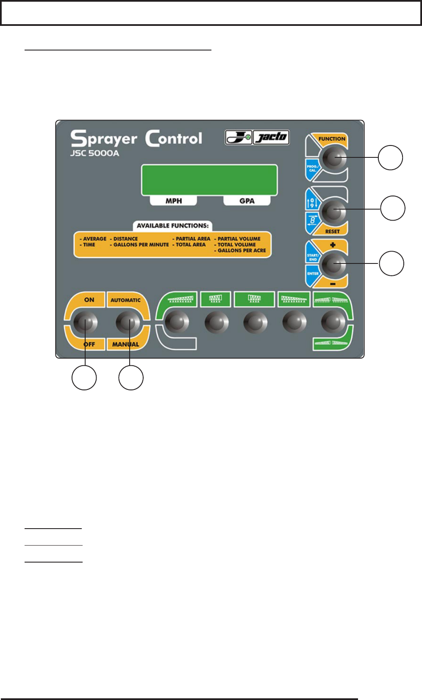
15.
АО-5000 А
Программирование
ДОСТУП К ПРОГРАММЕ КОНТРОЛЯ
АО-5000 Сходит с уже запрограммированной сборочной линии.
В случае, если вам нужно изменить программу или даже обслуживать ее электронную систему, вы должны получить доступ
Как описано ниже ,
ДОСТУП К АО-5000 ПРОГРАММА И КАЛИБРУ TION
T O получить доступ к функции «Программа / Калибровка», включить управление с помощью переключателя №.
1 и установите переключатель №. 2 на «Ручной». Также необходимо переместить «Prog./ Cal. " 3.
Вниз и переключатель «Сброс» №. 4 вверх в то же время и удерживайте их в течение 10 секунд.
Затем обратите внимание, что функция «Prog./ Cal. ".
ПРИМЕЧАНИЕ. Информация, которая будет объясняться здесь, будет доступна в элементе управления через
Переключатели с функциями, соответствующими синему цвету ,
СДЕЛАТЬ ЛЕГКИЕ ПОНИМАТЬ И, ЭТИ ПЕРЕКЛЮЧАТЕЛИ БУДУТ БУДЬ НЕТ. 1, 2, 3, 4 И 5
№ переключателя. 1 - Включает / выключает систему.
№ переключателя. 2 - Он выбирает режим работы: ручной или автоматический.
№ переключателя. 3 - Доступ к опциям для программирования и проверки следующих функций:
1 - «Скорость потока Adj», где «Adj.» Означает «регулировка».
2 - «Регулировка скорости».
3 - «Длина секции стрелы Adj.», Где «Adj». Означает «корректировка».
Четвертый - «Т» Est / Setup "- проверить работу колесных датчиков, расходомера и давления
Регулировочный электродвигатель ,
ПРИМЕЧАНИЕ: После установки в функции «Prog./ Cal. "Невозможно вернуться к последней функции
доступ. Если вы перешли к следующей функции, необходимо будет повторить операцию до
Введите программу / калибровку.
39.
3.
4
5
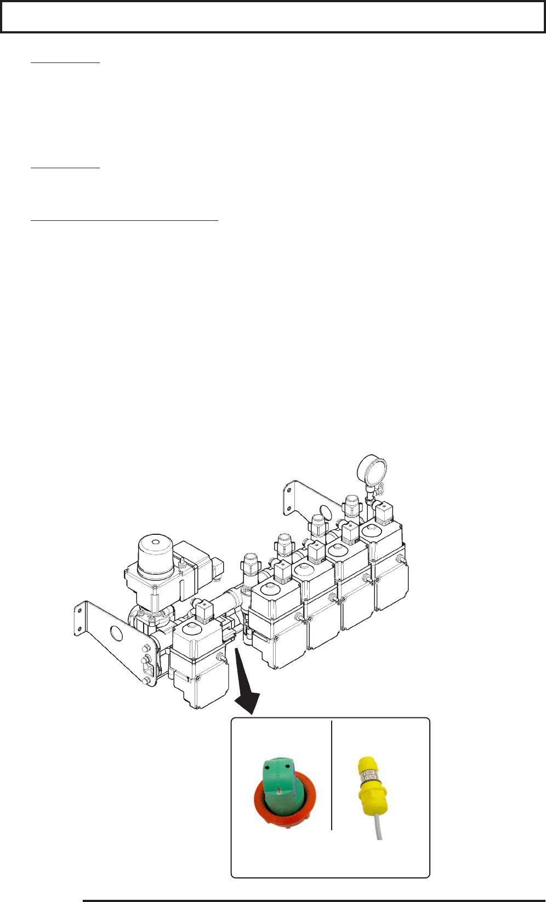
16.
АО-5000 А
Программы
№ переключателя. 4 - Изменяет следующие значения:
- постоянная расходомера (скорость потока).
- Постоянная скорости (Speed Adj.)
- постоянная длины секции стрелы (длина секции стрелы Adj.)
№ переключателя. 5 - Он запоминает постоянные значения, вводимые через переключатель №.4.
1- РЕГУЛИРОВКА РАСХОДОМЕРА
ПРИМЕЧАНИЕ: Перед калибровкой расходомера , Очистите и промойте контур распылителя: резервуар, управление, форсунки,
Трубы, фильтры и т. Д.
Это механизм, встроенный в давление распылителя Линии, которая измеряет расход в
Gpm, который проходит через контроль на пути к распылительной стреле. Постоянная расходомера
- отношение пульса на литр, распыляемое соплами.
TTENTION: Это значение может меняться от механизма к другому , При вводе этого значения в
Управляющая память , Убедитесь, что это наиболее точное возможное, чтобы предотвратить ошибки в
Считывание расхода и распыленного объема.
Расходомер
Скорость потока
Управляющий датчик
Вниманию: _______________________________________
Убедитесь, что он установлен правильно ,
17.
АО-5000 А
Программирование
Всякий раз, когда необходимо заменить расходомер , Пакет будет иметь постоянное значение
Для ввода в управляющую память , Так как это значение может меняться af Терморегулирование расходомера , Это очень
Важно проверить это С точностью , Потому что именно через это и другие постоянные значения, которые
Элемент управления предоставит данные о приложении.
вводящих КОНСТРУКЦИЯ РАСХОДОМЕРОВ ANT V ALUE IN КОНТРОЛЬ MEMOR Y
- Войдите в функцию «Prog./ Cal. "В соответствии с инструкциями на стр. 15.
- Переместить переключатель №. 3 (стр. 15) вниз.
- Обратите внимание на то, что инструкция «Скорость потока Adj.» Будет отображаться.
- Затем переместите переключатель №. 5 (стр. 15) вниз.
В верхней части дисплея появляется скорость потока стрелы в gpm.
В нижней части дисплея появляется постоянное значение расходомера.
- Переместите переключатель №. 4 вниз и обратите внимание, что последнее число константы начинает мигать
, В случае необходимости изменить его, переместите этот переключатель вверх. Если нет необходимости изменять
Это значение, но значение перед ним, переместите этот переключатель вниз, чтобы изменить единицу, а затем вверх
Для изменения соответствующего значения единицы измерения до получения требуемого значения.
ПРИМЕЧАНИЕ. Переместите вверх, чтобы изменить единицы измерения и вниз, чтобы изменить значение единицы измерения.
- После ввода значений переместите переключатель №. 5 вниз и удерживайте ее в течение нескольких секунд.
Обратите внимание, что на дисплее будет отображаться «W Ait ", затем" Adj. OK?" Сюда , Программируется новое постоянное значение.
ПРОВЕРКА IF КОНСТРУКЦИЯ РАСХОДОМЕРОВ МУРАВЕЙ ВЕРНО
- Доступ к функции «Программа».
- Установите все рычаги управления в положение S молиться.
- Отрегулируйте давление в соответствии с типом форсунки (Ручной регулятор давления).
ПРИМЕЧАНИЕ. Убедитесь, что вращение двигателя остается неизменным во время проверки.
- Соберите расход форсунки на стреле (общий расход).
ПРИМЕЧАНИЕ. Собранная скорость потока должна быть такой же, как показано на дисплее , Если нет, вы должны
Исправьте постоянное значение на электронном управлении.
ИМПОРТИРОВАТЬ МУРАВЕЙ : Перед изменением постоянного значения проверьте, чист ли расходомер и соберите
Во много раз скорость потока стрелы. Это значение чрезвычайно важно для калибровки и
Считывание управления распылителем. Проверьте также, не вращается ли вращение двигателя.
*
18.
АО-5000 А
Программирование
ПРОЦЕДУРА
- Войдите в функцию «Prog./ Cal ", как описано на стр. 15.
- Переместите переключатель №. 3 вниз дважды (стр. 13).
- Обратите внимание, что на дисплее отобразится: «Регулировка скорости».
- Затем переместите переключатель №. 5 вниз (стр. 15), и на дисплее отобразится «Distance =
50 м "(неизменяемое значение) сверху и константа регулировки скорости в нижней части.
- Остановите опрыскиватель на ровной поверхности, свободной от препятствий и кривых, на точном расстоянии от
50 метров длиной.
- Включите ВОМ со скоростью 540 об / мин (для опрыскивателей линии Columbia / Advance). Это вращение может
Даже изменение, но распылитель никогда не должен двигаться назад.
ПРИМЕЧАНИЕ. Калибровочная шестерня должна быть как можно медленнее, чтобы можно было легко
164 фута.
Алабама ОБРАБОТКА РАСХОДОМЕРОВ МУРАВЕЙ
Пример:
Постоянная запись в электронном управлении 61 5
Скорость потока на дисплее 7,13 гал
Скорость потока проверяется на стреле 7,39 гал
Новое постоянное значение ( Икс )
XX
39.
ЗАМЕТКА: T O выйти из программы, переместить переключатель №. 3 вниз четыре раза.
2- РЕГУЛИРОВКА СКОРОСТИ
На передних колесах Uniport (спереди) и на колесах опрыскивателей Columbia / Advance
Оснащенные электронным управлением, имеются стальные диски с отверстиями. Диаметр диска, а также
Диаметр и положение отверстий измеряются и должны быть точными для идеальной работы системы.
Поэтому никогда не пытайтесь ремонтировать, но заменяйте его оригинальным.
Для каждого диска, установленного на колесах, имеется датчик, поэтому скорость распылителя регулируется
В зависимости от количества отверстий, проходящих через датчик ,
Перед настройкой проверьте состояние и давление в шинах. Предпочтительно , Шины должны быть
Оригинальные и откалиброванные с рекомендованным давлением для каждого типа оборудования.
ИМПОРТИРОВАТЬ МУРАВЕЙ : Если вы отрегулируете скорость с помощью шин, не откалиброванных в соответствии с рекомендациями, то
Быть вариацией по отношению к постоянной и фактической скорости при калибровке их как указано
В руководстве оператора, так как диаметр и периметр колес изменятся, равно как и число
Оборотов (миля / линейный). Такая же проблема возникает, если вы не используете оригинальные шины, и у вас будет
Для повторного изменения значения.
19.
АО-5000 А
Программирование
ПРИМЕЧАНИЕ. Вращение двигателя может колебаться, потому что скорость не установлена, учитывая
Distrance / Т Ime, но число оборотов, которое датчик колеса регистрирует через имеющиеся отверстия
На колесных дисках на пути 164 фута.
- Выберите ссылочную точку на распылителе ,
- В то время эта ссылочная точка p Ослов по начальной точке до 164 футов, переместите переключатель
нет. 5 вверх (стр. 15), чтобы начать настройку скорости.
- В тот момент, когда одна и та же ссылочная точка достигает 164 фута, переместите переключатель №. 5 вверх
Еще раз (стр. 15), чтобы закончить настройку скорости.
ПРИМЕЧАНИЕ. Отображаемое значение будет соответствовать постоянной скорости.
ВОЗМОЖНЫЕ ОШИБКИ ПРИ РЕГУЛИРОВАНИИ СКОРОСТИ
A- СООБЩЕНИЕ: F ВСН T КОЛЕСО ДАТЧИК
Это сообщение появляется, если один или оба датчика работают неправильно ,
Возможные причины
- Неисправный датчик колеса , Или датчик колеса, расположенный более удаленно от диска колеса, чем
Рекомендуется (правильное расстояние: 0,1 1 до 0,12 дюйма).
- Поврежден диск колеса.
- Плохой контакт на разъеме или клеммах.
B- СООБЩЕНИЕ: ОШИБКА ДИАМЕТРА КОЛЕСА
- T Давление, за исключением указанного.
- Шины диф. Брендов.
C- СООБЩЕНИЕ: CONST ANT ERROR
Это сообщение появится, когда количество импульсов, собранных с колеса на пути
164 фута ниже или ниже значения, запрограммированного в JCS-5000 контроль.
Возможные причины
- 164 фута Расстояние не было правильно измерено ,
- T Модель сильно отличается от указанной.
ПРИМЕЧАНИЕ: T O выйти из программы, переместить переключатель №. 3 вниз три раза.
3- РЕГУЛИРОВКА ДЛИНЫ СЕЧЕНИЯ СТРЕЛКИ
Нет никакого эксплуатационного фактора, который мог бы изменить эти значения и заставить опрыскиватель работать с
Ирреальные данные, если оператор или третье лицо не используют функцию и вводят значения, которые не
Соответствуют характеристикам опрыскивателя. Эти значения вводятся в память управления распылителем ,
Так как необходимо сделать эти значения совместимыми с расстоянием между соплом на стреле,
Учитывая, что существует три возможных рассто ни между соплом: 13,77, 15,74 или 19,68 дюйма.
ИЗМЕРЕНИЕ КАЖДОЙ СТРЕЛКИ РАЗДЕЛ ДЛИНА
1-ый(ая) Y Ou должен проверить, какая связь между переключателем управления и секцией стрелы. Да....
Может сделать это, установив переключатель сброса №. 1, чтобы включить спрей на стрелу и установить другую
Выключатели для выключения распыления , Затем включите любой из других переключателей, чтобы включить спрей в любое из
Секций стрелы и идентифицировать секцию стрелы, соответствующую этому swicth. Повторите эту операцию
С другими выключателями для предотвращения повреждения при распылении
2й T O идентифицируйте длину каждой секции стрелы, просто посчитайте сопла на секции стрелы и
Умножьте это число на значение, соответствующее расстоянию между соплом (дюйм).
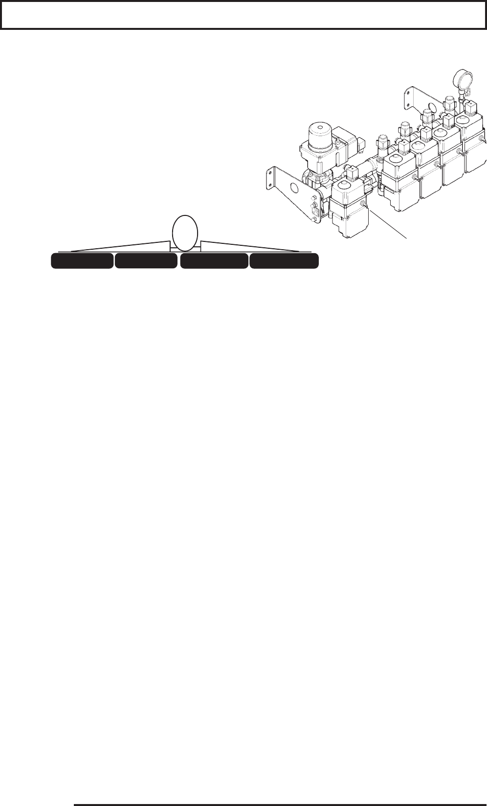
20.
АО-5000 А
А
BC
Т
1
Программы
Пример: Columbia Cross с насосом JP-100
T Otal сопла = 37 - Расстояние между соплом = 19,68 дюйма
Секции стрелы:
А = 9 форсунок Икс 19,68 дюйма = 177,12 дюйма
B = 9 форсунок Икс 19,68 дюйма знак равно 177,12 дюйма
C = 10 форсунок Икс 19,68 Дюйм = 196 дюймов
D = 9 форсунок Икс 19,68 Дюйм = 177,12 дюйма
TOT Алабама = 37 СОЗЫВКИ знак равно 727,36 дюйма
ДОСТУП К ЭТИМ В ALUES
- Войдите в функцию «Prog./ Cal. ", Как описано на стр. 15.
- Установите все рычаги управления в положение F спрей ,
- Переместите переключатель №. 3 вниз три раза (стр. 15).
- Обратите внимание, что на дисплее будет отображаться «Длина сечения штанги Adj.».
- Затем переместите переключатель №. 5 (p Age15), и на дисплее отобразится: «T Урна в разделе ".
- Установите рычаг, соответствующий секции стрелы, для регулировки, чтобы включить спрей , Э
Дисплей автоматически покажет значение, которое может варьироваться в зависимости от длины стрелы и сопла
расстояния.
- T O измените это значение, переместите переключатель №. 4 вниз (стр. 15), что сделает последним
Число flash. Затем выполните следующие действия:
А) переместите этот переключатель вверх, чтобы изменить это значение
B) переместите этот переключатель вниз, чтобы число перед вспышкой.
- После ввода значений переместите переключатель №. 5 вниз (стр. 15), и дисплей будет
Шоу "Adj. OK?"
- Установите выключатель секции стрелы назад, чтобы выключить распылитель.
- Повторите эту операцию с другими секциями стрелы.
ПРИМЕЧАНИЕ. Каждый раз можно отрегулировать только одну секцию стрелы. Если вы работаете более чем с одним
В то же время на дисплее появится сообщение об ошибке.
На дисплее также будет отображаться буква «P», когда переключатель быстрого сброса установлен для включения распылителя
К буму.
T O введите значения длины секций стрелы, переключатель быстрого сброса можно установить для включения или выключения
спрей ,
ПРИМЕЧАНИЕ: T O выйти из программы, переместить переключатель №. 3 вниз дважды.
21.
АО-5000 А
Программирование
4- ИСПЫТАТЕЛЬНАЯ УСТАНОВКА
Эта функция и следующие используются для программирования модели распылителя, на которой
Установлен АО-5000 и проверяется работа датчика колеса , Датчик расходомера и
Двигатель управления распылением ,
Если нет необходимости обращаться к этим функциям, переместите переключатель №. 3 вниз (стр.
15) и АО-5000 Снова будет работать нормально.
ДОСТУП К ФУНКЦИЯМ ТЕСТА / НАСТРОЙКИ
- Войдите в функцию «Prog./ Cal. ", Как описано на стр. 15.
- Переместите переключатель №. 3 вниз 4 раза (стр. 15). На дисплее появится надпись «TEST / SETUP».
- Затем переместите переключатель №. 5 вниз (p Возраст 15 лет). На дисплее отобразится: «SPRA YER
МОДЕЛЬ".
- Снова переместите переключатель №. 5 вниз (стр. 15), на дисплее появится распылитель
Модель запрограммирована. T O измените модель распылителя, переместите переключатель №. 4 вниз (стр. 15).
ПРОВЕРКА ДАТЧИКА КОЛЕС 1
- Переместите переключатель №. 3 вниз (стр. 15).
- В верхней части дисплея отобразится «WHEEL SENSOR 1», и внизу дисплея появится
Количество накопленных импульсов этого датчика при движении распылителя.
ПРОВЕРКА ДАТЧИКА КОЛЕС 2
- Переместите переключатель №. 3 вниз (стр. 15).
- Действуйте как описано выше, чтобы проверить, как функционирует ДАТЧИК КОЛЕСА 2.
ПРОВЕРКА РАСХОДОМЕРА
- Переместите переключатель №. 3 вниз (стр. 15). В верхней части дисплея появится надпись «FLOWMETER
SENSOR ", и в нижней части дисплея будет отображаться количество кумулятивных импульсов
Расходомер, когда поток проходит через регулятор.
ПРОВЕРКА ЭЛЕКТРОННОГО ЦЕПИ THA T Actua TES КОНТРОЛЬ MOTOR
- Переместите переключатель №. 3 вниз (стр. 15), и на дисплее отобразится «MOTOR».
- Если переключатель №. 2 (стр. 15) установлено значение «РУЧНОЙ», в нижней части дисплея отобразится «ВЫБРАТЬ»
AUTOMA TIC». Действуйте в соответствии с инструкциями.
- Затем в нижней части дисплея появится «USE SWITCH +/-».
- Если вы переместите переключатель №. 5 вверх (+) (стр. 15), регулятор управления опустится, а
Давление будет увеличиваться. Таким образом, внизу дисплея появится надпись «INC. PRESSURE». После
Регулятор вращается полностью , На дисплее появится надпись «HIGH P , LIMIT». Если вы переместите переключатель №. 5
Вниз (-), регулятор управления будет подниматься, и давление будет уменьшаться. Сюда , дно
На дисплее появится надпись «DEC. PRESSURE». Как только регулятор вращается полностью , Дисплей будет
Показать "LOW P , LIMIT».
22.
АО-5000 А
Программирование
ПРОВЕРКА ДАТЧИКА УРОВНЯ
- Переместите переключатель №. 3 вниз (стр. 15). На дисплее появится «ДАТЧИК УРОВНЯ».
Если в баке есть вода, на дисплее появится надпись «WITH W TER ", если нет," БЕЗ W ТЕР».
ПРИМЕЧАНИЕ: После завершения доступа к функциям «TEST / SETUP», снова переведите переключатель №. 3.
Вниз один раз (стр. 15) и АО-5000 Снова будет работать нормально.
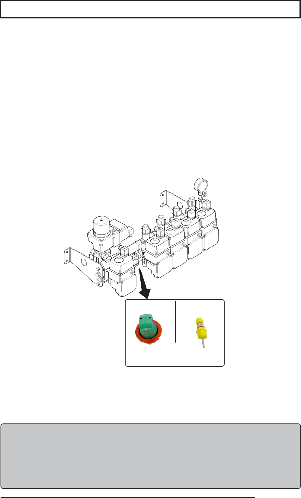
23.
АО-5000 А
Расходомер
датчиков
Расходомер
Вниманию: _______________________________________
Удостоверьтесь, чтобы соответствовать этому
Как показано ниже.
АО-5000 Состоит из электрических, электронных и механических компонентов.
Поэтому, чтобы АО-5000 Работайте без проблем, действуйте следующим образом:
- После нанесения положить чистую воду в бак и запустить опрыскиватель, чтобы очистить его внутри
цепи.
- При очистке машины не направляйте струю воды на контроллер ,
- Убедитесь, что кабели расположены таким образом, чтобы они не были сжаты или скручены.
- Всегда чистите колесные диски и датчики.
ТENЕНИЕ: чтобы всегда иметь точное показание расхода, периодически очищайте
Расходомер
Вниманию: _______________________________________
В случае высококонцентрированных смачиваемых порошков или воды со взвешенными частицами, вы
Следует чистить расходомер, когда вы пополняете бак.
При установке расходомера , Обратите внимание, что у него разные лица и
Как показано выше.
ТЕХНИЧЕСКОЕ ОБСЛУЖИВАНИЕ
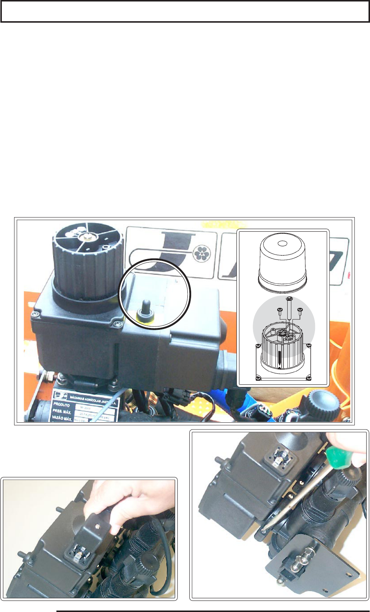
24.
АО-5000 А
А
РЕГУЛИРОВКА РУЧНОГО ДАВЛЕНИЯ
В случае возникновения каких-либо проблем с электронной системой, управление может работать механически ,
Затем установите переключатель №. 2 (стр. 15) на «РУЧНОЙ».
Чтобы отрегулировать давление, переместите переключатель A (обведенный на рисунке ниже). Таким образом вы можете продолжить
с собой на работу.
TTENTION: T O механически , Опрыскиватель должен быть откалиброван в обычном
Системы, как описано в руководстве оператора, и опрыскивание не может контролироваться электронным способом
также.
Если такая проблема возникает и в электрической системе, действуйте следующим образом:
- Установите переключатель №. 2 (стр. 15) на «РУЧНОЙ».
- Снимите колпачок ручки.
- Снимите штырь, фиксирующий рукоятку на двигателе регулятора давления ,
Сюда , Вы можете отрегулировать давление вручную ,
- Для того, чтобы система управления вернулась к работе в электронном виде после решения проблемы, установите стопорный штифт в положение
контроль. Прежде всего, стрелка на ручке должна совпадать со стрелкой на крышке картера коробки передач ,
РУКОВОДСТВО OPERA УПРАВЛЕНИЕ
РЫЧАГИ
- Снимите управляющий электрический кабель.
- Ослабьте два винта и снимите зажимы.
ТЕХНИЧЕСКОЕ ОБСЛУЖИВАНИЕ
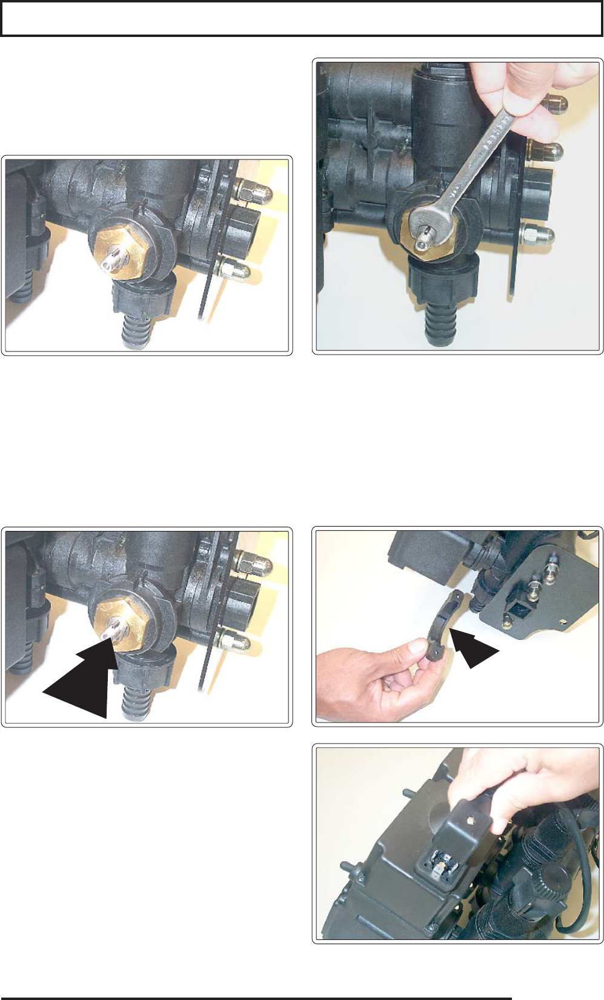
25.
АО-5000 А
- Снимите электродвигатель ,
- Используйте открытый ключ (10 мм - 7/16 дюйма)
Вращать сердечник для включения / выключения распылителя ,
СБОРКА ЭЛЕКТРИЧЕСКОГО ДВИГАТЕЛЯ НА УПРАВЛЯЮЩЕМ ТЕЛЕ
- Для идеальной сборки электродвигателя на корпусе управления , Убедитесь, что отверстие на
Моторный блок совмещен с пластмассовым штифтом на сердечнике управления (рисунок ниже).
- После сборки блока двигателя на регуляторе убедитесь, что фиксатор правильно установлен
Соедините части. Обратите внимание на выступающую часть на одной из сторон зажима и расположите ее, как показано
ниже.
- При подключении электрического кабеля учтите, что
Один из разъемов отличается. Убедитесь,
Положение является правильным для идеальной установки.
- Затем, закрепите электрический кабель с помощью прилагаемого
Винт
ТЕХНИЧЕСКОЕ ОБСЛУЖИВАНИЕ
TTENTION: Как можно скорее отрегулируйте контроль, чтобы продолжать использовать
Преимущества электронного управления.
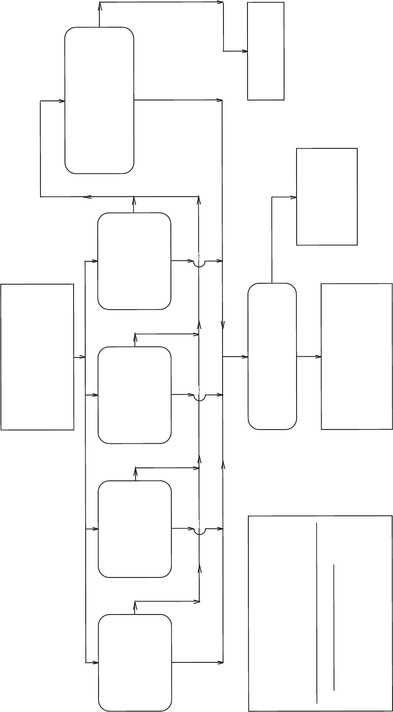
ИСПЫТАНИЕ СЕЧЕНИЙ СТРЕЛЫ ДАТЧИКИ И ЗВУКОВАЯ СИГНАЛИЗАЦИЯ (СИРЕНА)
- Распылитель работает.
- АО-5000 Установлено значение
Автоматический пистолет
- Рычаг быстрого сброса установлен на
"Облегчение"
- Проблемы на подъеме
Разъем датчика или
.
- Замените секцию стрелы
дат
При быстрой настройке
Рычаг сброса давления на "Давление"
И возвращаясь к «Рельефу»,
Является сиюминутным
Срабатывает сигнализация?
При включении
Секция стрелы 1,
Является сиюминутным
Срабатывает сигнализация?
При приведении в действие другой стрелы
Секций, является сиюминутным
Срабатывает сигнализация?
- Проблемы
Разъем датчика
Или кабель
- Замените сирену.
ЗАМЕТКА: я е Вы установите рычаг быстрой разгрузки в положение
«Давление» и удерживайте его более
30 секунд, на дисплее отобразится
«Spra
YER ST
OPPED FOR LONG
Время
или
С35.1(f)
ВСН
В
Колесо
дат Это...
Потому что переключатель no. 4 установлен в
AUTOMA TIC и опрыскиватель остановлены
С напылением.
ДА
ДА
ДА
ДА
ДА
НЕТ
НЕТ
НЕТ
НЕТ
При включении
Стреле 2,
Является сиюминутным
Срабатывает сигнализация?
При включении
Стреле 3,
Является сиюминутным
Срабатывает сигнализация?
При включении
Секция стрелы 4,
Является сиюминутным
Срабатывает сигнализация?
КОНЕЦ ПРОВЕРКИ
ОК
ДА
НЕТ
НЕТ
ДИАГНОСТИРОВАНИЕ ЭЛЕКТРОННЫХ ПРОБЛЕМ
АО-5000 не может быть
1:17
Дисплей остается выключенным.
АО-5000 Является intermit-
палатка; Иногда это не может быть
Включается или отображается повторно,
Отключение электропитания или с неизвестным
фразы.
- Проверьте входное напряжение.
- Проверьте разъемы и предохранители.
Проверьте кабели и разъемы.
Заменить ЗАО-5000 Компьютер и
Выполнить новую настройку / программу или
Введите предыдущие значения в карточку, когда
Они были обновлены в предыдущем обслуживании.
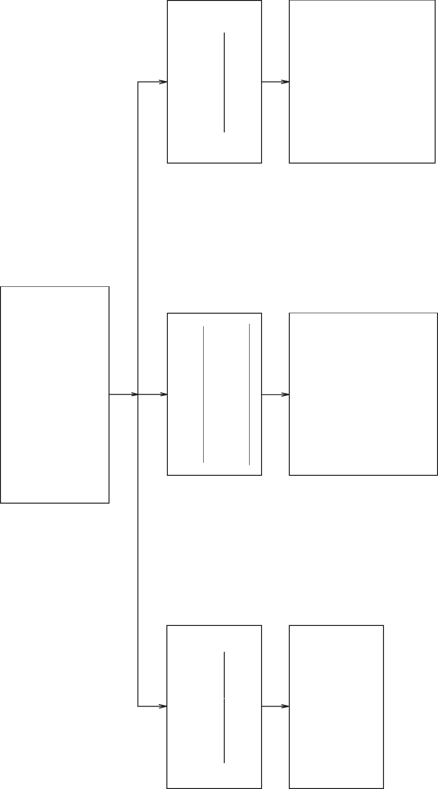
ДИАГНОСТИРОВАНИЕ СИГНАЛОВ ПРИ ПРОГРАММИРОВАНИИ / РЕГУЛИРОВАНИИ
Звучит сигнал будильника:
«ПОСТ ANT ERROR "
- Проблемы с колесными датчиками,
Или разъемы или кабель.
- Разница по периметру шин ,
- Разница в давлении в шинах.
Вводимое или собранное значение очень
Отличается от нормального.
- Существует более одной стрелы
Раздел с распылителем.
- Y Ou должен включить только один
Секция стрелы каждый раз, чтобы
Запрограммируйте значение.
Во время программы / регулировки
Процесс
Звучит сигнал будильника:
«ОШИБКА РАЗДЕЛА»
Звучит сигнал будильника:
«F ВСН T КОЛЕСО ДАТЧИК»
или
Звучит сигнал будильника:
«ОШИБКА ДИАМЕТРА КОЛЕСА»
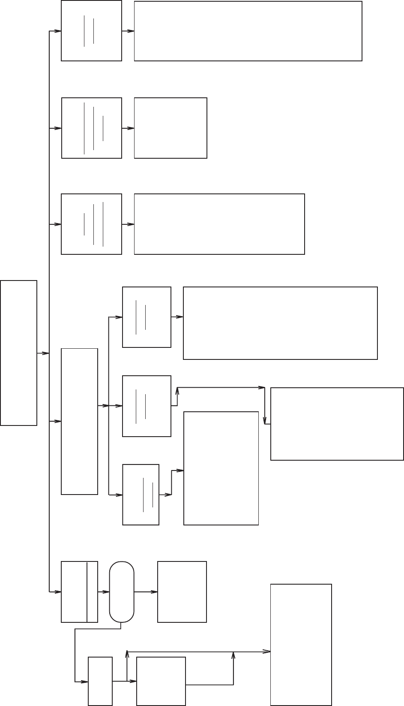
ДИАГНОСТИРОВАНИЕ ДЕФЕКТОВ НА СПРАВАХ YERS, ОСНАЩЕННЫЕ АК-5000 A
Spra ПРОВЕРЯТЬ
УСТАНОВКА ПЕР SWЛЮЧАТЕЛЯ К AUTOMA TIC
Низкая
напряжение
Проверить
предохранители,
Разъемы
И кабели
Заменить АО-5000 Компьютер и
Произвести новую корректировку / программу или
Введите предыдущие значения в карточку,
Когда они были обновлены в предыдущих
7.2 Техническое обслуживание
Звучит сигнал будильника:
Ошибка батареи!
Высокое напряжение!
Проблемы
регулятор напряжения
Или генератор переменного тока
Звучит сигнал будильника:
«ПОСТ ANT ERROR "
Только
КОНТРОЛИРУЕМЫЙ
ошибка
- Скорость распылителя не постоянна,
Он колеблется слишком много.
- T Засовывали шланги,
Линейных и сопловых фильтров.
- В Низкое рабочее давление,
Близко к минимуму на
Неразрушающая система -.
КОНТРОЛИРУЕМЫЙ
ошибка
Низкое давление
лимить
- Объем распыления
Несовместимы с
Рабочая скорость
И тип сопла.
- Проблемы
Электрический минимум
Конец пути давления
Или электродвигателей
ПЛАСТИНА
- Неисправность
Разъемы или
.
КОНТРОЛИРУЕМЫЙ
ошибка
Высокое давление
лимить
- Объем распыления
Несовместимы с
Рабочая скорость
И тип сопла.
- Проблемы
Электрический минимум
Конец пути давления
Или электродвигателей
ПЛАСТИНА
- Проблемы
Разъемы или
.
- Проблемы
Расходомер В Ery загрязнения.
- Распылитель работает
С небольшим количеством воды в
Резервуарный парк
Звучит сигнал будильника:
Аварийный
ВОДОМЕР
Или СУХОЙ НАСОС "
- Распылитель
Работает без
воду
- Проблемы
Расходомер
Электронное
дат
- Проблемы
Расходомер ,
- Проблемы
Расходомер
датчиков
Разъем или
.
Звучит сигнал будильника:
Раздел БУМА
Точность
ошибка
- Неправильный
Корректировка
3,1 Экономический бум
РАЗДЕЛ 5:
11.4 Возврат.
Вы должны.
перестроиться.
Звучит сигнал будильника:
Память
ошибка
Далее следует:
число)
- «СБРОС»
Компьютер
Память
Выполнить еще раз
Регулировка /
Программы или
Ввод предыдущих
значений.
- Заменить
АО-5000 А
Компьютер и
Повторить
Регулировка /
Программы или
Ввод предыдущих
значений.
НЕТ
ДА
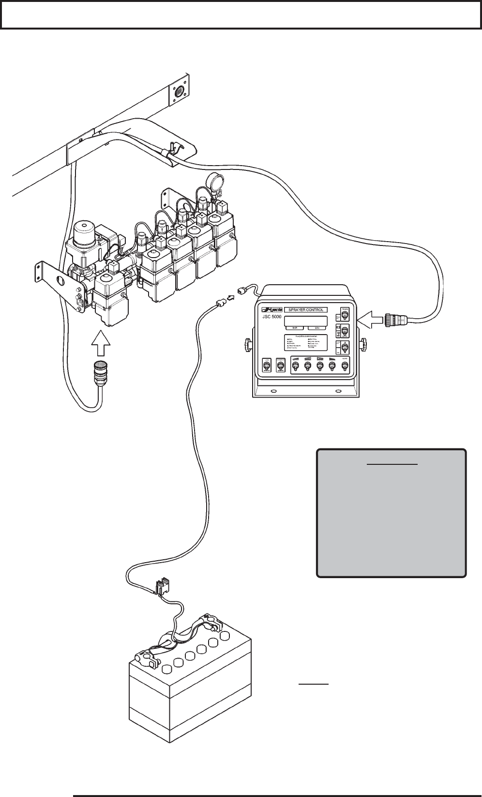
30.
АО-5000 А
ТЕХНИЧЕСКОЕ ОБСЛУЖИВАНИЕ
АО-5000 INST АЛЛА ДИАГРАММА
(ADV ANCE, CRUZADOR & COLUMBIA ADRA-18 SPRA Yers)
Кабели
поддержка
S Контролировать молитву
Электричество
АО-5000 А
Основной кабель
Батарея
(От трактора до трактора-
Или от
Самоходные опрыскиватели)
Кабель аккумулятора
Плавкие предохранители
Красный провод
(Положительный полюс)
Черный провод
(Отрицательный полюс)
Вниманию: _______________________________________
- Для работы с аккумуляторами требуется
Чрезвычайное внимание, поскольку жидкость
Внутри - кислота и может вызвать
Ожоги кожи, глаз,
Одежду, к тому же это
взрывной.
- T Не забывайте подключать
Положительные и отрицательные полюса
Инвертированный, что может
Аккумулятор взорваться.
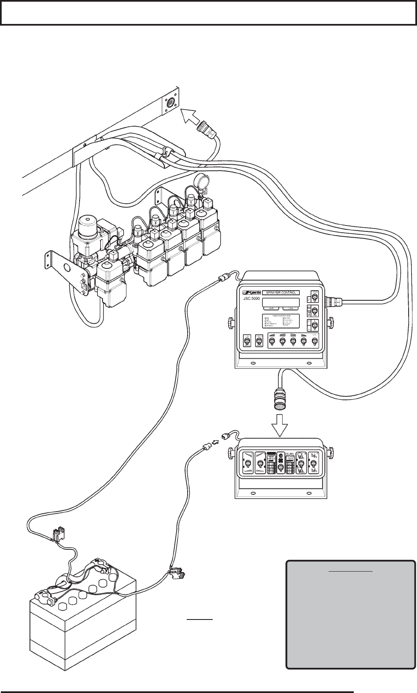
31.
АО-5000 А
ТЕХНИЧЕСКОЕ ОБСЛУЖИВАНИЕ
Кабели
поддержка
S Помолиться
Электричество
АО-5000 А
Основной кабель
(Для АО-5000 A)
Батарея
(От трактора до трактора-
Или от
Самоходные опрыскиватели)
Кабель аккумулятора
(Для АО-5000 A)
Плавкие предохранители
Красный провод
(Положительный полюс)
Черный провод
(Отрицательный полюс)
Основной кабель
(Для JEC-3200 / JEC-3400 или
Электрическая панель III)
JEC-3200 или JEC-3400
Или электрическая панель
Кабель аккумулятора
(Для JEC-3200 / JEC-3400 или
Электрическая панель III)
Плавкие предохранители
JEC-3200 / JEC-3400 & ELECTRIC P ANEL III INST АЛЛА ДИАГРАММЫ НА
УЖЕ ИНСТРУМЕНТ АЛЛИД АО-5000
Вниманию: _______________________________________
- Для работы с аккумуляторами требуется
Чрезвычайное внимание, поскольку жидкость
Внутри - кислота и может вызвать
Ожоги кожи, глаз,
Одежду, к тому же это
взрывной.
- T Не забывайте подключать
Положительные и отрицательные полюса
Инвертированный, что может
Аккумулятор взорваться.
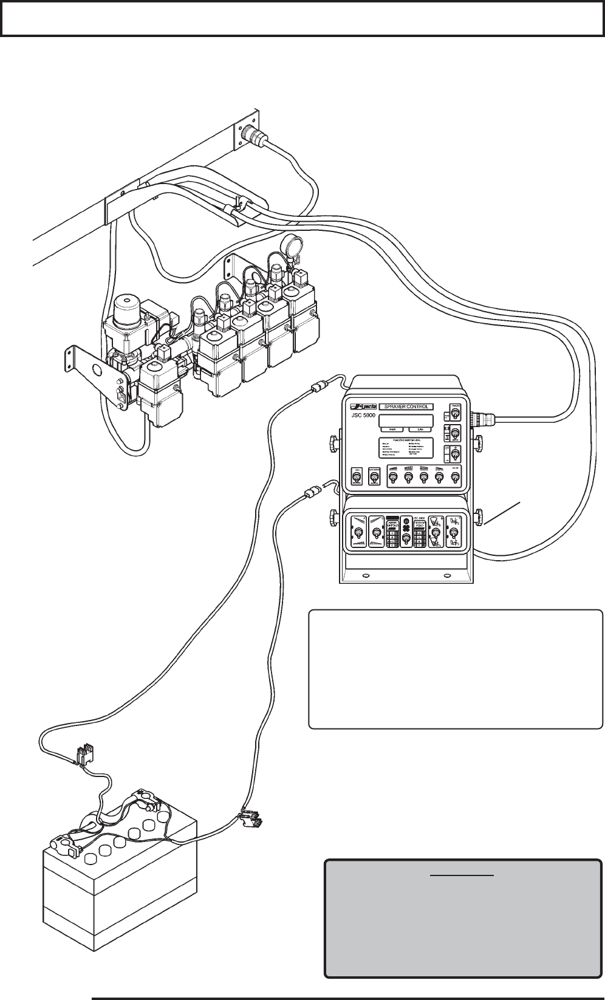
Резервное копирование истории
АО-5000 А
ТЕХНИЧЕСКОЕ ОБСЛУЖИВАНИЕ
ПОЛОЖЕНИЕ JEC-3200, JEC-3400, ELECTRIC P ANEL III & JSC-5000
ПРИМЕЧАНИЕ: JEC-3200, JEC-3400, Eletric
Группа III и АО-5000 Контроллеры могут быть
Установлены в разных местах, в группе или
Раздельная, но для оператора подходит
Имейте их в удобном положении.
АО-5000 А
Черный провод
(Отрицательный полюс)
Красный провод
(Положительный полюс)
JEC-3200 или
JEC-3400 или
Электрическая панель
Вниманию: _______________________________________
- Работа с батареями требует особого внимания,
Так как жидкость внутри является кислотой и может вызывать ожоги
На коже, глазах, одежде, к тому же это
взрывной.
- T Не обращайте внимания на то, чтобы
Инвертированные отрицательные полюса, что может
Аккумулятор взорваться.
33.
АО-5000 А
ST TEMENT OF LIMITED W ARRANTY
MÁQUINAS AGRÍCOLAS JACTO SA гарантирует оборудование, описанное в настоящем документе, и соглашается на ремонт
Или заменить детали и компоненты, которые при нормальной эксплуатации и изнашивании следуют техническим
Рекомендации, показать ДЕФЕКТЫ В МАТЕРИАЛЕ ИЛИ В РАБОТЕ.
{0}2.5{/0} {1} {/1} {2}Гарантийный срок{/2}
- Один (1) год с даты покупки первоначальным розничным покупателем.
ПРИМЕНЕНИЕ ГАРАНТИЙ:
Jacto или его уполномоченный представитель должны соблюдать эту гарантию, если какая-либо часть или компонент показывает подтвержденные
Дефект в изготовлении.
ЭТО ДОЛЖНО БЫТЬ ПОНЯТНО, ЧТО ЗАМЕНА ПОЛНЫХ КОМПОНЕНТОВ ДОЛЖНА
ТОЛЬКО БУДЕТ ВЫПОЛНЕН, ЧТО ДЕФЕКТ НЕ МОЖЕТ БЫТЬ РЕМОНТНО ЗАМЕНЯЕМ
ЧАСТИ И / ИЛИ КОМПОНЕНТЫ.
НАСТОЯЩАЯ ГАРАНТИЯ ЯВЛЯЕТСЯ ОГРАНИЧЕННОЙ И ПЛОХОЙ ЕСЛИ:
- Оборудование не используется в соответствии с ИНСТРУКЦИЕЙ ПО ЭКСПЛУАТАЦИИ, перегрузкой или несчастными случаями.
- Неправильное профилактическое обслуживание или несанкционированное использование.
- Модификация оборудования никак не связана с оригинальным дизайном.
- Изменение, повреждение или потеря идентификационной таблички изделия.
- Использование деталей и компонентов, не поставляемых JACTO.
КАРТОЧКА РЕГИСТРАЦИИ ПРОДУКТА ДОЛЖНА БЫТЬ ЗАПОЛНЯНА ОРИГИНАЛЬНОЙ РОЗILНОЙ
ПОКУПАТЕЛЬ, И ВОЗВРАЩЕН В JACTO ДИЛЕР В 30 ДНЕЙ ПОКУПКИ ДАТА.
ГАРАНТИЙНЫЕ ИСКЛЮЧЕНИЯ:
- Части, рассматриваемые как нормальное техническое обслуживание, такие как корректировки, повторное затягивание и т. Д.
- Части, которые показывают износ или разрыв в результате использования, ЕСЛИ ОНИ НЕ ПОКАЗАЛИ ДЕФЕКТЫ В РАБОТОМ,
СБОРКА ИЛИ МАТЕРИАЛ.
- Дефекты, возникшие в результате несчастных случаев.
- Телесные или имущественные травмы пользователя, владельца или третьих лиц.
- Плата за перевозку, сбор и доставку.
Общая информация:
- Дефектные детали, замененные в гарантийный период, являются собственностью JACTO.
- Гарантия на части и компоненты, замененные на концы с истечением срока действия гарантии на оборудование
- Возможные задержки при выполнении услуг не дают владельцу право на возмещение или продление
От гарантийного срока.
- JACTO оставляет за собой право изменять свою продукцию или прерывать производство оборудования.
- ЭТА ОГРАНИЧЕННАЯ ГАРАНТИЯ понимается по ее выраженным условиям, и никто в любом случае не является субъектом
К JACTO, имеет право изменять или усиливать условия, предписанные в настоящем документе.
- В случае гарантийного требования обратитесь к авторизованному дилеру, который предоставит всю необходимую информацию для
работы. Не забудьте идентификацию оборудования, общее количество часов работы и замеченный дефект.
ДЛЯ НАСТОЯЩЕЙ ГАРАНТИИ СТАТЬ ЭФФЕКТИВНОЙ КАРТОЙ РЕГИСТРАЦИИ ПРОДУКТА НАЙДЕНЫ
В ИНСТРУКЦИИ РУКОВОДСТВО ДОЛЖНО БЫТЬ ЗАПОЛНЕНА И ВОЗВРАТИТЬСЯ К ВАШЕМУ ДИЛЕРУ JACTO.
ЭТА КАРТА ДОЛЖНА БЫТЬ ПОДПИСАНА ОРИГИНАЛЬНЫМ РОЗНИЧНЫМ ПОКУПАТЕЛЕМ, ОЗНАЧАЯ, ЧТО ОН
ПРОЧИТАЙТЕ И ПОНИМАЙТЕ ВСЕ ИНСТРУКЦИИ ПО БЕЗОПАСНОСТИ И ЭКСПЛУАТАЦИИ В РУКОВОДСТВЕ,
ДАЛЬШЕ РОЗНИЧНЫЙ ДИЛЕР ОБЪЯСИЛСЯ ОРИГИНАЛЬНОМУ РОЗНИЧНОМУ ПОКУПАТЕЛЮ ВСЕ
ИНСТРУКЦИИ ПО ТЕХНИКЕ БЕЗОПАСНОСТИ. НИ ПРИ КАКИХ ОБСТОЯТЕЛЬСТВАХ ГАРАНТИЯ НЕ ДОПУСКАЕТСЯ ДО ЭТОЙ КАРТЫ, ПРАВИЛЬНО
ЗАВЕРШЕНА И ПОДПИСАНА, НАХОДИТСЯ В ФАЙЛЕ С ДИКТОРОМ РОЗЫСКА JACTO.
JACTO ЗАПРЕЩАЕТ ПРАВО НА ИЗМЕНЕНИЕ ПРОДУКТОВ БЕЗ ПРЕДВАРИТЕЛЬНОГО УВЕДОМЛЕНИЯ.